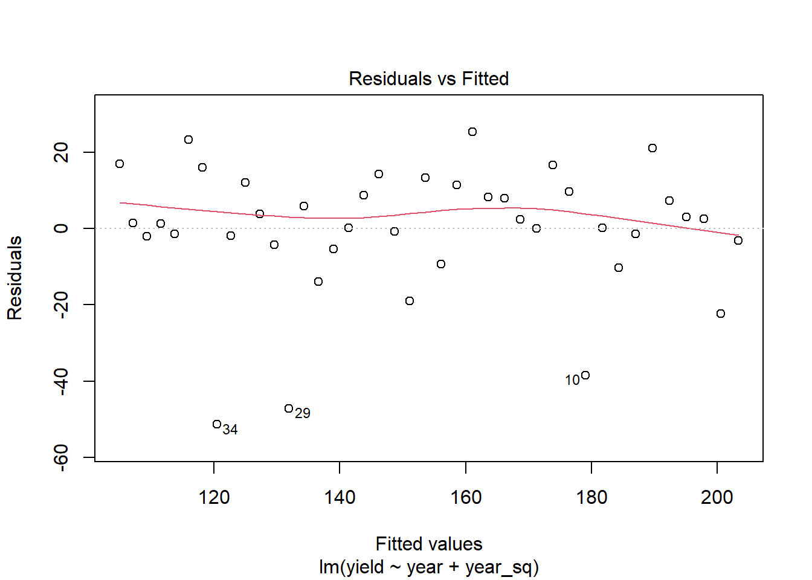
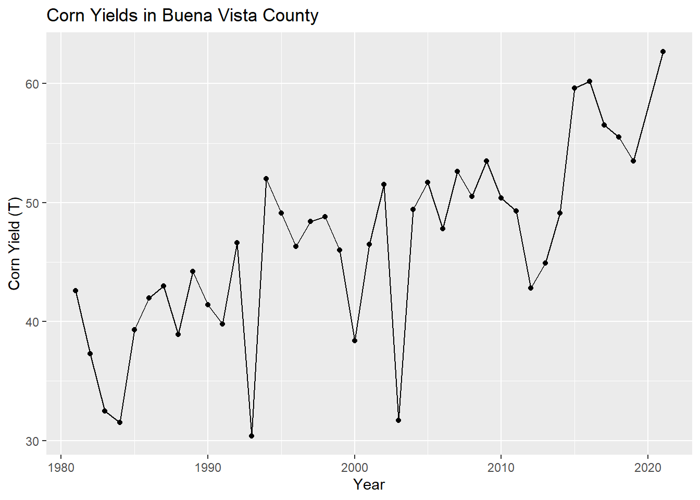

Chapter 6 Corn and Weather Data Analysis
In this assignment we learned about model creation in R. Using data from PRISM and NASS we created a series of models relating crop yields to temperature trends.
6.1 Loading in data
6.1.1 Load the PRISM daily maximum temperatures
# daily max temperature
# dimensions: counties x days x years
prism <- readMat("data/prismiowa.mat")
# look at county #1
t_1981_c1 <- prism$tmaxdaily.iowa[1,,1]
t_1981_c1[366]## [1] NaNplot(1:366, t_1981_c1, type = "l")
ggplot() +
geom_line(mapping = aes(x=1:366, y = t_1981_c1)) +
theme_bw() +
xlab("day of year") +
ylab("daily maximum temperature (°C)") +
ggtitle("Daily Maximum Temperature, Iowa County #1")## Warning: Removed 1 row(s) containing missing values (geom_path).
# assign dimension names to tmax matrix
dimnames(prism$tmaxdaily.iowa) <- list(prism$COUNTYFP, 1:366, prism$years)
# converted 3d matrix into a data frame
tmaxdf <- as.data.frame.table(prism$tmaxdaily.iowa)
# relabel the columns
colnames(tmaxdf) <- c("countyfp","doy","year","tmax")
tmaxdf <- tibble(tmaxdf)6.2 Investigating temperature trends
6.2.1 Summer temperature trends: Winneshiek County
tmaxdf$doy <- as.numeric(tmaxdf$doy)
tmaxdf$year <- as.numeric(as.character(tmaxdf$year))
winnesummer <- tmaxdf %>%
filter(countyfp==191 & doy >= 152 & doy <= 243) %>%
group_by(year) %>%
summarize(meantmax = mean(tmax))## `summarise()` ungrouping output (override with `.groups` argument)ggplot(winnesummer, mapping = aes(x = year, y = meantmax)) +
geom_point() +
theme_bw() +
labs(x = "year", y = "Tmax (°C)") +
geom_smooth(method = lm)## `geom_smooth()` using formula 'y ~ x'
lm_summertmax <- lm(meantmax ~ year, winnesummer)
summary(lm_summertmax)##
## Call:
## lm(formula = meantmax ~ year, data = winnesummer)
##
## Residuals:
## Min 1Q Median 3Q Max
## -2.5189 -0.7867 -0.0341 0.6859 3.7415
##
## Coefficients:
## Estimate Std. Error t value Pr(>|t|)
## (Intercept) 41.57670 36.44848 1.141 0.262
## year -0.00747 0.01823 -0.410 0.684
##
## Residual standard error: 1.232 on 36 degrees of freedom
## Multiple R-squared: 0.004644, Adjusted R-squared: -0.02301
## F-statistic: 0.168 on 1 and 36 DF, p-value: 0.68446.2.2 Winter Temperatures - Winneshiek County
winnewinter <- tmaxdf %>%
filter(countyfp==191 & doy <= 59 | doy >= 335 & !is.na(tmax)) %>%
group_by(year) %>%
summarize(meantmax = mean(tmax))## `summarise()` ungrouping output (override with `.groups` argument)ggplot(winnewinter, mapping = aes(x = year, y = meantmax)) +
geom_point() +
theme_bw() +
labs(x = "year", y = "Tmax (°C)") +
geom_smooth(method = lm)## `geom_smooth()` using formula 'y ~ x'
lm_wintertmax <- lm(meantmax ~ year, winnewinter)
summary(lm_wintertmax)##
## Call:
## lm(formula = meantmax ~ year, data = winnewinter)
##
## Residuals:
## Min 1Q Median 3Q Max
## -8.0748 -2.6494 0.7715 2.2172 4.1361
##
## Coefficients:
## Estimate Std. Error t value Pr(>|t|)
## (Intercept) -119.10546 94.08124 -1.266 0.214
## year 0.05960 0.04705 1.267 0.213
##
## Residual standard error: 3.181 on 36 degrees of freedom
## Multiple R-squared: 0.04267, Adjusted R-squared: 0.01608
## F-statistic: 1.605 on 1 and 36 DF, p-value: 0.21346.2.3 Multiple regression – Quadratic time trend
winnewinter$yearsq <- winnewinter$year^2
lm_wintertmaxquad <- lm(meantmax ~ year + yearsq, winnewinter)
summary(lm_wintertmaxquad)##
## Call:
## lm(formula = meantmax ~ year + yearsq, data = winnewinter)
##
## Residuals:
## Min 1Q Median 3Q Max
## -7.680 -2.813 0.640 2.264 4.072
##
## Coefficients:
## Estimate Std. Error t value Pr(>|t|)
## (Intercept) -1.049e+04 1.939e+04 -0.541 0.592
## year 1.043e+01 1.940e+01 0.538 0.594
## yearsq -2.594e-03 4.851e-03 -0.535 0.596
##
## Residual standard error: 3.213 on 35 degrees of freedom
## Multiple R-squared: 0.05043, Adjusted R-squared: -0.003832
## F-statistic: 0.9294 on 2 and 35 DF, p-value: 0.4043winnewinter$fitted <- lm_wintertmaxquad$fitted.values
ggplot(winnewinter) +
geom_point(mapping = aes(x = year, y = meantmax)) +
geom_line(mapping = aes(x = year, y = fitted)) +
theme_bw() +
labs(x = "year", y = "tmax")
6.2.4 Download NASS corn yield data
6.3 Assignment
6.3.1 Q1
6.3.1.1 Part A
Extract Winneshiek County corn yields, fit a linear time trend, make a plot. Is there a significant time trend
#glimpse(cornyields)
library(lubridate)##
## Attaching package: 'lubridate'## The following objects are masked from 'package:base':
##
## date, intersect, setdiff, uniondata <- cornyields %>%
filter(county_name == "WINNESHIEK")
m1a <- lm(data = data, yield~year)
summary(m1a)##
## Call:
## lm(formula = yield ~ year, data = data)
##
## Residuals:
## Min 1Q Median 3Q Max
## -51.163 -1.841 2.363 9.437 24.376
##
## Coefficients:
## Estimate Std. Error t value Pr(>|t|)
## (Intercept) -4763.290 448.286 -10.63 4.46e-13 ***
## year 2.457 0.224 10.96 1.77e-13 ***
## ---
## Signif. codes: 0 '***' 0.001 '**' 0.01 '*' 0.05 '.' 0.1 ' ' 1
##
## Residual standard error: 16.97 on 39 degrees of freedom
## Multiple R-squared: 0.7551, Adjusted R-squared: 0.7488
## F-statistic: 120.2 on 1 and 39 DF, p-value: 1.767e-13data %>%
ggplot(., aes(x = year, y = yield))+
geom_point()+
geom_line()+
labs(x = 'Year', y = 'Corn Yield (T)', title= 'Corn Yields in Winnesiek County')
Yes, there is a significant, postitive trend over time.
6.3.1.2 Part B
Fit a quadratic time trend (i.e., year + year^2) and make a plot. Is there evidence for slowing yield growth?
data$year_sq <- data$year^2
m1b <- lm(data = data, yield~year+year_sq)
summary(m1b)##
## Call:
## lm(formula = yield ~ year + year_sq, data = data)
##
## Residuals:
## Min 1Q Median 3Q Max
## -51.384 -3.115 1.388 9.743 25.324
##
## Coefficients:
## Estimate Std. Error t value Pr(>|t|)
## (Intercept) 2.583e+04 8.580e+04 0.301 0.765
## year -2.812e+01 8.576e+01 -0.328 0.745
## year_sq 7.641e-03 2.143e-02 0.357 0.723
##
## Residual standard error: 17.17 on 38 degrees of freedom
## Multiple R-squared: 0.7559, Adjusted R-squared: 0.7431
## F-statistic: 58.84 on 2 and 38 DF, p-value: 2.311e-12plot(m1b, which = 1)
Yes, there is evidence that the trend is slowing in more recent years.
6.3.2 Q2
Time Series: Let’s analyze the relationship between temperature and yields for the Winneshiek County time series. Use data on yield and summer avg Tmax. Is adding year or Tmax^2 to your model helpful? Make a plot and interpret the results.
data_t <- data %>%
left_join(., tmaxdf, by = 'year') %>%
filter(is.finite(tmax))
m2a <- lm(data = data_t, yield~tmax)
summary(m2a)##
## Call:
## lm(formula = yield ~ tmax, data = data_t)
##
## Residuals:
## Min 1Q Median 3Q Max
## -80.936 -23.710 -5.975 24.567 63.177
##
## Coefficients:
## Estimate Std. Error t value Pr(>|t|)
## (Intercept) 1.484e+02 4.263e-02 3480.55 <2e-16 ***
## tmax 4.011e-02 2.195e-03 18.28 <2e-16 ***
## ---
## Signif. codes: 0 '***' 0.001 '**' 0.01 '*' 0.05 '.' 0.1 ' ' 1
##
## Residual standard error: 32.52 on 1374019 degrees of freedom
## Multiple R-squared: 0.000243, Adjusted R-squared: 0.0002423
## F-statistic: 334 on 1 and 1374019 DF, p-value: < 2.2e-16#plot(m2a)
data_t$tmax_sq <- data_t$tmax^2
m2b <- lm(data = data_t, yield~tmax+tmax_sq)
summary(m2b)##
## Call:
## lm(formula = yield ~ tmax + tmax_sq, data = data_t)
##
## Residuals:
## Min 1Q Median 3Q Max
## -80.439 -23.948 -3.084 24.585 66.333
##
## Coefficients:
## Estimate Std. Error t value Pr(>|t|)
## (Intercept) 1.484e+02 4.271e-02 3475.38 <2e-16 ***
## tmax 1.195e-01 4.766e-03 25.07 <2e-16 ***
## tmax_sq -3.236e-03 1.725e-04 -18.76 <2e-16 ***
## ---
## Signif. codes: 0 '***' 0.001 '**' 0.01 '*' 0.05 '.' 0.1 ' ' 1
##
## Residual standard error: 32.51 on 1374018 degrees of freedom
## Multiple R-squared: 0.0004991, Adjusted R-squared: 0.0004976
## F-statistic: 343.1 on 2 and 1374018 DF, p-value: < 2.2e-16#plot(m2b)
p <- ggplot(data_t,aes(x=yield, y = tmax)) +
geom_bin2d(binwidth = 1)
p
p <- ggplot(data_t,aes(x=yield, y = tmax_sq)) +
geom_bin2d(binwidth = 1)
pYes, adding the square of max temperature improved our model somewhat.
6.3.3 Q3
Cross-Section: Analyze the relationship between temperature and yield across all counties in 2018. Is there a relationship? Interpret the results.
data3 <- cornyields %>%
mutate(countyfp = as.factor(county_ansi)) %>%
full_join(., tmaxdf, by = c('year', 'countyfp')) %>%
mutate(tmax_sq = tmax^2,
countyfp = as.factor(countyfp))
summary(lm(data = data3, yield~0+tmax+tmax_sq))##
## Call:
## lm(formula = yield ~ 0 + tmax + tmax_sq, data = data3)
##
## Residuals:
## Min 1Q Median 3Q Max
## -219.85 0.64 56.64 122.33 316.59
##
## Coefficients:
## Estimate Std. Error t value Pr(>|t|)
## tmax 4.8114193 0.0140746 341.9 <2e-16 ***
## tmax_sq 0.0323888 0.0005318 60.9 <2e-16 ***
## ---
## Signif. codes: 0 '***' 0.001 '**' 0.01 '*' 0.05 '.' 0.1 ' ' 1
##
## Residual standard error: 100.3 on 1368909 degrees of freedom
## (8248 observations deleted due to missingness)
## Multiple R-squared: 0.5433, Adjusted R-squared: 0.5433
## F-statistic: 8.141e+05 on 2 and 1368909 DF, p-value: < 2.2e-16Yes,there is a positive relationship between max temperature and growth for the year, as indicated by the low p-value on our slope. However, max temperature only explains some of the variability in our data, as indicated by an r-squared value of 0.54.
6.3.4 Q4
Panel: One way to leverage multiple time series is to group all data into what is called a “panel” regression. Convert the county ID code (“countyfp” or “county_ansi”) into factor using as.factor, then include this variable in a regression using all counties’ yield and summer temperature data. How does the significance of your temperature coefficients (Tmax, Tmax^2) change? Make a plot comparing actual and fitted yields and interpret the results of your model.
m4 <- lm(data = data3, yield~0+tmax+tmax_sq*countyfp)
summary(m4)##
## Call:
## lm(formula = yield ~ 0 + tmax + tmax_sq * countyfp, data = data3)
##
## Residuals:
## Min 1Q Median 3Q Max
## -114.867 -20.843 -0.896 24.560 85.493
##
## Coefficients:
## Estimate Std. Error t value Pr(>|t|)
## tmax 1.669e-01 4.890e-03 34.130 < 2e-16 ***
## tmax_sq -5.883e-03 8.012e-04 -7.343 2.09e-13 ***
## countyfp1 1.358e+02 4.210e-01 322.524 < 2e-16 ***
## countyfp3 1.315e+02 4.224e-01 311.266 < 2e-16 ***
## countyfp5 1.465e+02 4.063e-01 360.504 < 2e-16 ***
## countyfp7 1.161e+02 4.279e-01 271.275 < 2e-16 ***
## countyfp9 1.447e+02 4.176e-01 346.568 < 2e-16 ***
## countyfp11 1.484e+02 4.131e-01 359.227 < 2e-16 ***
## countyfp13 1.499e+02 4.106e-01 365.043 < 2e-16 ***
## countyfp15 1.543e+02 4.154e-01 371.320 < 2e-16 ***
## countyfp17 1.545e+02 4.092e-01 377.566 < 2e-16 ***
## countyfp19 1.508e+02 4.098e-01 368.055 < 2e-16 ***
## countyfp21 1.507e+02 4.110e-01 366.747 < 2e-16 ***
## countyfp23 1.513e+02 4.102e-01 368.926 < 2e-16 ***
## countyfp25 1.517e+02 4.129e-01 367.518 < 2e-16 ***
## countyfp27 1.497e+02 4.148e-01 360.912 < 2e-16 ***
## countyfp29 1.422e+02 4.209e-01 337.768 < 2e-16 ***
## countyfp31 1.562e+02 4.154e-01 376.160 < 2e-16 ***
## countyfp33 1.482e+02 4.064e-01 364.742 < 2e-16 ***
## countyfp35 1.550e+02 4.116e-01 376.667 < 2e-16 ***
## countyfp37 1.461e+02 4.074e-01 358.626 < 2e-16 ***
## countyfp39 1.102e+02 4.266e-01 258.357 < 2e-16 ***
## countyfp41 1.486e+02 4.080e-01 364.118 < 2e-16 ***
## countyfp43 1.522e+02 4.087e-01 372.459 < 2e-16 ***
## countyfp45 1.517e+02 4.139e-01 366.611 < 2e-16 ***
## countyfp47 1.470e+02 4.154e-01 353.831 < 2e-16 ***
## countyfp49 1.477e+02 4.173e-01 353.896 < 2e-16 ***
## countyfp51 1.171e+02 4.291e-01 272.870 < 2e-16 ***
## countyfp53 1.176e+02 4.286e-01 274.384 < 2e-16 ***
## countyfp55 1.530e+02 4.093e-01 373.928 < 2e-16 ***
## countyfp57 1.447e+02 4.221e-01 342.937 < 2e-16 ***
## countyfp59 1.454e+02 4.051e-01 358.849 < 2e-16 ***
## countyfp61 1.532e+02 4.083e-01 375.350 < 2e-16 ***
## countyfp63 1.506e+02 4.066e-01 370.470 < 2e-16 ***
## countyfp65 1.509e+02 4.086e-01 369.294 < 2e-16 ***
## countyfp67 1.482e+02 4.079e-01 363.333 < 2e-16 ***
## countyfp69 1.537e+02 4.087e-01 376.179 < 2e-16 ***
## countyfp71 1.396e+02 4.275e-01 326.454 < 2e-16 ***
## countyfp73 1.524e+02 4.157e-01 366.618 < 2e-16 ***
## countyfp75 1.537e+02 4.114e-01 373.530 < 2e-16 ***
## countyfp77 1.406e+02 4.176e-01 336.658 < 2e-16 ***
## countyfp79 1.538e+02 4.124e-01 372.910 < 2e-16 ***
## countyfp81 1.524e+02 4.067e-01 374.658 < 2e-16 ***
## countyfp83 1.550e+02 4.112e-01 376.930 < 2e-16 ***
## countyfp85 1.418e+02 4.198e-01 337.691 < 2e-16 ***
## countyfp87 1.387e+02 4.224e-01 328.402 < 2e-16 ***
## countyfp89 1.448e+02 4.049e-01 357.591 < 2e-16 ***
## countyfp91 1.530e+02 4.099e-01 373.361 < 2e-16 ***
## countyfp93 1.531e+02 4.135e-01 370.163 < 2e-16 ***
## countyfp95 1.457e+02 4.162e-01 350.158 < 2e-16 ***
## countyfp97 1.412e+02 4.107e-01 343.891 < 2e-16 ***
## countyfp99 1.526e+02 4.170e-01 365.949 < 2e-16 ***
## countyfp101 1.307e+02 4.214e-01 310.157 < 2e-16 ***
## countyfp103 1.430e+02 4.167e-01 343.104 < 2e-16 ***
## countyfp105 1.499e+02 4.116e-01 364.220 < 2e-16 ***
## countyfp107 1.377e+02 4.192e-01 328.496 < 2e-16 ***
## countyfp109 1.554e+02 4.077e-01 381.134 < 2e-16 ***
## countyfp111 1.322e+02 4.246e-01 311.307 < 2e-16 ***
## countyfp113 1.482e+02 4.131e-01 358.726 < 2e-16 ***
## countyfp115 1.402e+02 4.202e-01 333.690 < 2e-16 ***
## countyfp117 1.118e+02 4.327e-01 258.308 < 2e-16 ***
## countyfp119 1.501e+02 4.075e-01 368.254 < 2e-16 ***
## countyfp121 1.341e+02 4.201e-01 319.330 < 2e-16 ***
## countyfp123 1.439e+02 4.195e-01 343.125 < 2e-16 ***
## countyfp125 1.371e+02 4.194e-01 326.822 < 2e-16 ***
## countyfp127 1.557e+02 4.134e-01 376.537 < 2e-16 ***
## countyfp129 1.370e+02 4.363e-01 314.093 < 2e-16 ***
## countyfp131 1.514e+02 4.053e-01 373.528 < 2e-16 ***
## countyfp133 1.348e+02 4.179e-01 322.638 < 2e-16 ***
## countyfp135 1.191e+02 4.256e-01 279.774 < 2e-16 ***
## countyfp137 1.382e+02 4.240e-01 326.053 < 2e-16 ***
## countyfp139 1.442e+02 4.182e-01 344.787 < 2e-16 ***
## countyfp141 1.561e+02 4.089e-01 381.849 < 2e-16 ***
## countyfp143 1.514e+02 4.062e-01 372.753 < 2e-16 ***
## countyfp145 1.320e+02 4.260e-01 309.743 < 2e-16 ***
## countyfp147 1.496e+02 4.084e-01 366.259 < 2e-16 ***
## countyfp149 1.466e+02 4.123e-01 355.556 < 2e-16 ***
## countyfp151 1.531e+02 4.103e-01 373.133 < 2e-16 ***
## countyfp153 1.497e+02 4.169e-01 358.997 < 2e-16 ***
## countyfp155 1.446e+02 4.276e-01 338.072 < 2e-16 ***
## countyfp157 1.483e+02 4.148e-01 357.605 < 2e-16 ***
## countyfp159 1.146e+02 4.230e-01 270.966 < 2e-16 ***
## countyfp161 1.509e+02 4.126e-01 365.741 < 2e-16 ***
## countyfp163 1.563e+02 4.161e-01 375.743 < 2e-16 ***
## countyfp165 1.472e+02 4.188e-01 351.516 < 2e-16 ***
## countyfp167 1.557e+02 4.102e-01 379.565 < 2e-16 ***
## countyfp169 1.520e+02 4.145e-01 366.781 < 2e-16 ***
## countyfp171 1.507e+02 4.130e-01 364.907 < 2e-16 ***
## countyfp173 1.189e+02 4.287e-01 277.330 < 2e-16 ***
## countyfp175 1.237e+02 4.266e-01 289.888 < 2e-16 ***
## countyfp177 1.216e+02 4.241e-01 286.751 < 2e-16 ***
## countyfp179 1.293e+02 4.269e-01 302.929 < 2e-16 ***
## countyfp181 1.331e+02 4.194e-01 317.255 < 2e-16 ***
## countyfp183 1.443e+02 4.200e-01 343.544 < 2e-16 ***
## countyfp185 1.133e+02 4.275e-01 264.977 < 2e-16 ***
## countyfp187 1.558e+02 4.123e-01 378.033 < 2e-16 ***
## countyfp189 1.518e+02 4.059e-01 374.118 < 2e-16 ***
## countyfp191 1.486e+02 4.064e-01 365.556 < 2e-16 ***
## countyfp193 1.407e+02 4.149e-01 339.102 < 2e-16 ***
## countyfp195 1.500e+02 4.049e-01 370.526 < 2e-16 ***
## countyfp197 1.539e+02 4.092e-01 376.161 < 2e-16 ***
## tmax_sq:countyfp3 -1.659e-04 1.115e-03 -0.149 0.8818
## tmax_sq:countyfp5 6.862e-04 1.171e-03 0.586 0.5578
## tmax_sq:countyfp7 -1.092e-03 1.123e-03 -0.973 0.3307
## tmax_sq:countyfp9 -1.740e-04 1.125e-03 -0.155 0.8772
## tmax_sq:countyfp11 -3.414e-04 1.136e-03 -0.300 0.7639
## tmax_sq:countyfp13 1.309e-04 1.144e-03 0.114 0.9089
## tmax_sq:countyfp15 6.775e-05 1.121e-03 0.060 0.9518
## tmax_sq:countyfp17 2.040e-04 1.150e-03 0.177 0.8592
## tmax_sq:countyfp19 4.569e-04 1.154e-03 0.396 0.6923
## tmax_sq:countyfp21 8.829e-04 1.138e-03 0.776 0.4378
## tmax_sq:countyfp23 -1.328e-05 1.138e-03 -0.012 0.9907
## tmax_sq:countyfp25 6.621e-04 1.133e-03 0.584 0.5590
## tmax_sq:countyfp27 3.356e-04 1.125e-03 0.298 0.7655
## tmax_sq:countyfp29 2.467e-04 1.112e-03 0.222 0.8244
## tmax_sq:countyfp31 -1.560e-04 1.133e-03 -0.138 0.8905
## tmax_sq:countyfp33 2.119e-04 1.158e-03 0.183 0.8548
## tmax_sq:countyfp35 5.198e-04 1.129e-03 0.461 0.6451
## tmax_sq:countyfp37 -1.694e-05 1.164e-03 -0.015 0.9884
## tmax_sq:countyfp39 5.152e-04 1.122e-03 0.459 0.6460
## tmax_sq:countyfp41 2.172e-03 1.139e-03 1.907 0.0565 .
## tmax_sq:countyfp43 4.086e-04 1.162e-03 0.352 0.7251
## tmax_sq:countyfp45 -1.136e-03 1.135e-03 -1.001 0.3168
## tmax_sq:countyfp47 4.457e-04 1.128e-03 0.395 0.6926
## tmax_sq:countyfp49 1.015e-04 1.113e-03 0.091 0.9273
## tmax_sq:countyfp51 -2.455e-03 1.112e-03 -2.209 0.0272 *
## tmax_sq:countyfp53 -3.094e-04 1.121e-03 -0.276 0.7825
## tmax_sq:countyfp55 -5.258e-04 1.162e-03 -0.452 0.6510
## tmax_sq:countyfp57 3.398e-04 1.109e-03 0.306 0.7592
## tmax_sq:countyfp59 2.623e-03 1.149e-03 2.282 0.0225 *
## tmax_sq:countyfp61 -5.544e-04 1.166e-03 -0.476 0.6344
## tmax_sq:countyfp63 1.793e-03 1.156e-03 1.551 0.1209
## tmax_sq:countyfp65 9.779e-04 1.166e-03 0.839 0.4017
## tmax_sq:countyfp67 -3.379e-04 1.151e-03 -0.294 0.7691
## tmax_sq:countyfp69 1.069e-03 1.144e-03 0.935 0.3500
## tmax_sq:countyfp71 9.668e-04 1.080e-03 0.896 0.3705
## tmax_sq:countyfp73 1.424e-04 1.113e-03 0.128 0.8981
## tmax_sq:countyfp75 9.462e-04 1.141e-03 0.829 0.4071
## tmax_sq:countyfp77 2.046e-04 1.113e-03 0.184 0.8542
## tmax_sq:countyfp79 5.271e-04 1.128e-03 0.467 0.6404
## tmax_sq:countyfp81 5.660e-04 1.159e-03 0.488 0.6252
## tmax_sq:countyfp83 7.457e-04 1.132e-03 0.658 0.5102
## tmax_sq:countyfp85 3.194e-04 1.102e-03 0.290 0.7719
## tmax_sq:countyfp87 4.993e-04 1.106e-03 0.451 0.6517
## tmax_sq:countyfp89 6.885e-04 1.187e-03 0.580 0.5618
## tmax_sq:countyfp91 6.949e-04 1.150e-03 0.604 0.5458
## tmax_sq:countyfp93 1.965e-04 1.130e-03 0.174 0.8620
## tmax_sq:countyfp95 -2.750e-04 1.123e-03 -0.245 0.8066
## tmax_sq:countyfp97 -1.132e-03 1.148e-03 -0.986 0.3242
## tmax_sq:countyfp99 5.022e-04 1.121e-03 0.448 0.6542
## tmax_sq:countyfp101 -9.635e-04 1.094e-03 -0.881 0.3784
## tmax_sq:countyfp103 -4.843e-04 1.124e-03 -0.431 0.6664
## tmax_sq:countyfp105 -1.122e-03 1.144e-03 -0.981 0.3266
## tmax_sq:countyfp107 -8.411e-04 1.112e-03 -0.757 0.4492
## tmax_sq:countyfp109 1.418e-03 1.150e-03 1.233 0.2177
## tmax_sq:countyfp111 -7.665e-04 1.097e-03 -0.699 0.4846
## tmax_sq:countyfp113 -1.132e-03 1.140e-03 -0.994 0.3204
## tmax_sq:countyfp115 5.403e-04 1.104e-03 0.489 0.6245
## tmax_sq:countyfp117 -2.400e-04 1.131e-03 -0.212 0.8319
## tmax_sq:countyfp119 -9.879e-05 1.124e-03 -0.088 0.9300
## tmax_sq:countyfp121 -2.750e-05 1.117e-03 -0.025 0.9804
## tmax_sq:countyfp123 -5.103e-04 1.112e-03 -0.459 0.6463
## tmax_sq:countyfp125 6.080e-04 1.111e-03 0.547 0.5843
## tmax_sq:countyfp127 2.956e-04 1.137e-03 0.260 0.7948
## tmax_sq:countyfp129 1.062e-03 1.101e-03 0.965 0.3344
## tmax_sq:countyfp131 -3.182e-04 1.175e-03 -0.271 0.7865
## tmax_sq:countyfp133 -9.747e-05 1.095e-03 -0.089 0.9291
## tmax_sq:countyfp135 -7.682e-04 1.122e-03 -0.685 0.4935
## tmax_sq:countyfp137 8.693e-04 1.100e-03 0.790 0.4294
## tmax_sq:countyfp139 4.520e-04 1.113e-03 0.406 0.6847
## tmax_sq:countyfp141 1.386e-03 1.137e-03 1.219 0.2230
## tmax_sq:countyfp143 2.384e-03 1.152e-03 2.071 0.0384 *
## tmax_sq:countyfp145 3.812e-04 1.101e-03 0.346 0.7292
## tmax_sq:countyfp147 1.752e-03 1.141e-03 1.536 0.1244
## tmax_sq:countyfp149 -1.192e-03 1.114e-03 -1.070 0.2847
## tmax_sq:countyfp151 1.168e-03 1.132e-03 1.032 0.3022
## tmax_sq:countyfp153 1.128e-03 1.110e-03 1.016 0.3098
## tmax_sq:countyfp155 9.261e-04 1.111e-03 0.834 0.4045
## tmax_sq:countyfp157 1.297e-04 1.121e-03 0.116 0.9079
## tmax_sq:countyfp159 3.043e-04 1.116e-03 0.273 0.7852
## tmax_sq:countyfp161 4.567e-04 1.134e-03 0.403 0.6872
## tmax_sq:countyfp163 -6.772e-04 1.129e-03 -0.600 0.5487
## tmax_sq:countyfp165 5.073e-05 1.123e-03 0.045 0.9640
## tmax_sq:countyfp167 -4.368e-04 1.119e-03 -0.391 0.6962
## tmax_sq:countyfp169 1.086e-03 1.134e-03 0.957 0.3384
## tmax_sq:countyfp171 7.259e-04 1.136e-03 0.639 0.5228
## tmax_sq:countyfp173 1.294e-04 1.117e-03 0.116 0.9078
## tmax_sq:countyfp175 1.351e-04 1.124e-03 0.120 0.9043
## tmax_sq:countyfp177 -9.667e-04 1.087e-03 -0.890 0.3737
## tmax_sq:countyfp179 -1.556e-03 1.113e-03 -1.398 0.1621
## tmax_sq:countyfp181 6.363e-04 1.112e-03 0.572 0.5671
## tmax_sq:countyfp183 9.294e-05 1.106e-03 0.084 0.9330
## tmax_sq:countyfp185 -5.689e-04 1.126e-03 -0.505 0.6134
## tmax_sq:countyfp187 5.896e-04 1.135e-03 0.520 0.6033
## tmax_sq:countyfp189 1.231e-03 1.163e-03 1.059 0.2897
## tmax_sq:countyfp191 5.694e-04 1.177e-03 0.484 0.6286
## tmax_sq:countyfp193 -1.469e-04 1.110e-03 -0.132 0.8947
## tmax_sq:countyfp195 2.437e-04 1.177e-03 0.207 0.8359
## tmax_sq:countyfp197 9.200e-04 1.140e-03 0.807 0.4197
## ---
## Signif. codes: 0 '***' 0.001 '**' 0.01 '*' 0.05 '.' 0.1 ' ' 1
##
## Residual standard error: 33.14 on 1368712 degrees of freedom
## (8248 observations deleted due to missingness)
## Multiple R-squared: 0.9501, Adjusted R-squared: 0.9501
## F-statistic: 1.31e+05 on 199 and 1368712 DF, p-value: < 2.2e-16# Plot is breaking my html, but this code generates it.
#plot(m4, which = 1)The model with county code as a factor still has the temperature terms as highly significant, just with differences in degree between counties.
6.3.5 Q5
Soybeans: Download NASS data on soybean yields and explore either a time series relationship for a given county, the cross-sectional relationship for a given year, or a panel across all counties and years.
# parameters to query on
params <- list(commodity_desc = "SOYBEANS", prodn_practice_desc = "ALL PRODUCTION PRACTICES", year__GE = 1981, state_alpha = "IA")
# download
soyyieldsall <- nassqs_yields(params)##
|
| | 0%
|
| | 1%
|
|= | 1%
|
|= | 2%
|
|== | 2%
|
|== | 3%
|
|=== | 4%
|
|=== | 5%
|
|==== | 5%
|
|==== | 6%
|
|===== | 7%
|
|===== | 8%
|
|====== | 8%
|
|====== | 9%
|
|======= | 9%
|
|======= | 10%
|
|======== | 11%
|
|======== | 12%
|
|========= | 12%
|
|========= | 13%
|
|========== | 14%
|
|========== | 15%
|
|=========== | 15%
|
|=========== | 16%
|
|============ | 16%
|
|============ | 17%
|
|============ | 18%
|
|============= | 18%
|
|============= | 19%
|
|============== | 20%
|
|=============== | 21%
|
|=============== | 22%
|
|================ | 22%
|
|================ | 23%
|
|================= | 24%
|
|================= | 25%
|
|================== | 25%
|
|================== | 26%
|
|=================== | 27%
|
|=================== | 28%
|
|==================== | 28%
|
|==================== | 29%
|
|===================== | 30%
|
|===================== | 31%
|
|====================== | 31%
|
|====================== | 32%
|
|======================= | 32%
|
|======================= | 33%
|
|======================== | 34%
|
|======================== | 35%
|
|========================= | 35%
|
|========================= | 36%
|
|========================== | 37%
|
|========================== | 38%
|
|=========================== | 38%
|
|=========================== | 39%
|
|============================ | 39%
|
|============================ | 40%
|
|============================ | 41%
|
|============================= | 41%
|
|============================= | 42%
|
|============================== | 42%
|
|============================== | 43%
|
|=============================== | 44%
|
|=============================== | 45%
|
|================================ | 45%
|
|================================ | 46%
|
|================================= | 47%
|
|================================= | 48%
|
|================================== | 48%
|
|================================== | 49%
|
|=================================== | 49%
|
|=================================== | 50%
|
|=================================== | 51%
|
|==================================== | 51%
|
|==================================== | 52%
|
|===================================== | 52%
|
|===================================== | 53%
|
|====================================== | 54%
|
|====================================== | 55%
|
|======================================= | 55%
|
|======================================= | 56%
|
|======================================== | 56%
|
|======================================== | 57%
|
|======================================== | 58%
|
|========================================= | 58%
|
|========================================= | 59%
|
|========================================== | 60%
|
|=========================================== | 61%
|
|=========================================== | 62%
|
|============================================ | 62%
|
|============================================ | 63%
|
|============================================= | 64%
|
|============================================= | 65%
|
|============================================== | 65%
|
|============================================== | 66%
|
|=============================================== | 66%
|
|=============================================== | 67%
|
|=============================================== | 68%
|
|================================================ | 68%
|
|================================================ | 69%
|
|================================================= | 69%
|
|================================================= | 70%
|
|================================================== | 71%
|
|================================================== | 72%
|
|=================================================== | 72%
|
|=================================================== | 73%
|
|==================================================== | 74%
|
|==================================================== | 75%
|
|===================================================== | 75%
|
|===================================================== | 76%
|
|====================================================== | 77%
|
|====================================================== | 78%
|
|======================================================= | 78%
|
|======================================================= | 79%
|
|======================================================== | 80%
|
|======================================================== | 81%
|
|========================================================= | 81%
|
|========================================================= | 82%
|
|========================================================== | 82%
|
|========================================================== | 83%
|
|=========================================================== | 84%
|
|=========================================================== | 85%
|
|============================================================ | 85%
|
|============================================================ | 86%
|
|============================================================= | 87%
|
|============================================================== | 88%
|
|============================================================== | 89%
|
|=============================================================== | 89%
|
|=============================================================== | 90%
|
|=============================================================== | 91%
|
|================================================================ | 91%
|
|================================================================ | 92%
|
|================================================================= | 92%
|
|================================================================= | 93%
|
|================================================================== | 94%
|
|=================================================================== | 95%
|
|=================================================================== | 96%
|
|==================================================================== | 96%
|
|==================================================================== | 97%
|
|==================================================================== | 98%
|
|===================================================================== | 98%
|
|===================================================================== | 99%
|
|======================================================================| 99%
|
|======================================================================| 100%soyyieldsall$county_ansi <- as.numeric(soyyieldsall$county_ansi)
soyyieldsall$yield <- as.numeric(soyyieldsall$Value)
# clean and filter this dataset
soyyields <- select(soyyieldsall, county_ansi, county_name, yield, year) %>%
filter(!is.na(county_ansi) & !is.na(yield))
soyyields <- tibble(soyyields)
# reduce to buena vista county
buena_soy <- soyyields %>%
filter(county_name == 'BUENA VISTA')
ggplot(buena_soy, aes(x = year, y = yield))+
geom_point()+
geom_line()+
labs(x = 'Year', y = 'Corn Yield (T)', title= 'Corn Yields in Buena Vista County')
m5 <- lm(data = buena_soy, yield~year)